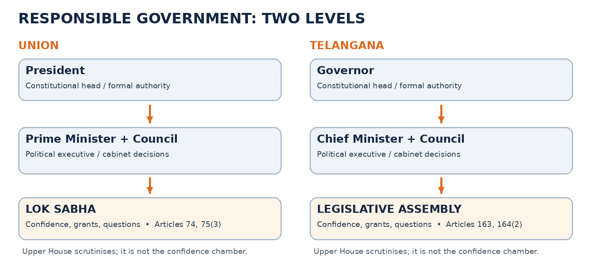
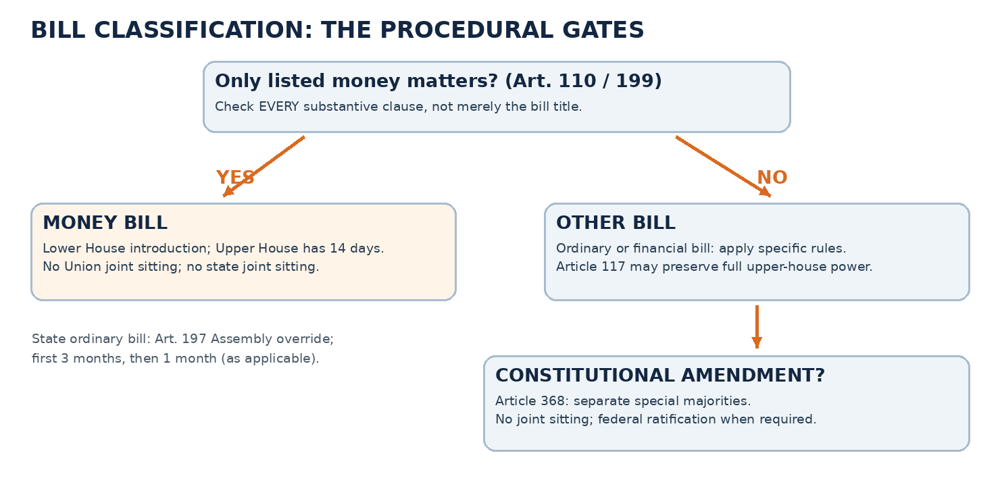
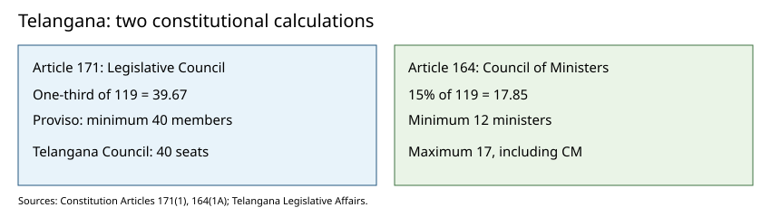
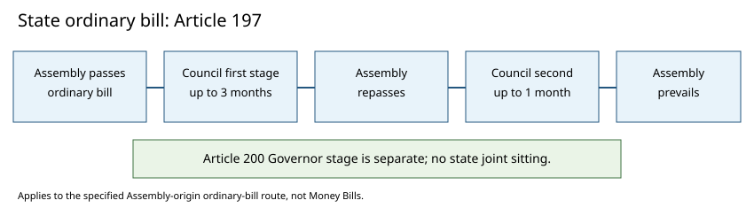

TGPSC Group I · P3 / U2 / T3Expanded draft · Not approved
Paper III | Unit II | Topic 3
System of Government: Parliamentary System, Union and State Executives, Legislatures and Privileges
Status: Expanded working draft for examination preparation; not academically approved. Research cut-off: 23 October 2026. Original practice questions; zero verified official PYQs in this chapter.
Exact syllabus wording: System of Government: Parliamentary system, Central Government: President, Prime Minister & Council of Ministers; Parliament: Powers and Functions; State Government: Governor, Chief Minister & Council of Ministers; Legislature: Powers and Functions, Legislative Privileges.
Syllabus clause
Main reading
Essential articles / instruments
Applied evidence
Parliamentary system
Concept 1
74–75, 163–164, Tenth Schedule
Majority tests, opposition, anti-defection
President
Concept 2
52–62, 72, 74, 78, 85, 111, 123, 352, 356
Hung Parliament, ordinances, impeachment
Prime Minister and Council of Ministers
Concept 3
75, 77, 78, 88, 91st Amendment
Cabinet rules, collective responsibility
Parliament: powers and functions
Concepts 4–5
79–123, 249, 312, 368
Ordinary vs Money vs financial bills, committees, budget
Governor
Concept 6
153–163, 174, 200–201, 213
2025 Presidential Reference and assent
Chief Minister and Council of Ministers
Concept 7
163–167, Tenth Schedule
Telangana 2023 election and state cabinet
State Legislature: powers and functions
Concept 8
168–212, 245–246, 254
Telangana 119 Assembly and 40 Council seats
Legislative privileges
Concept 9
105, 122, 194, 212, 361A
Sita Soren (2024) and legislative immunity
Integration / critical appraisal
Concept 10
Cross-cutting
Five practical constitutional stress tests
Topic summary
India's parliamentary government separates the constitutional head from the political executive while making the ministry responsible to the directly elected lower house. The President and Governor supply constitutional continuity; the Prime Minister and Chief Minister lead councils of ministers; Parliament and state legislatures authorise laws and expenditure, scrutinise ministries and represent competing interests. Union bicameralism and Telangana's bicameral legislature differ in the powers of their upper Houses. Parliamentary privileges protect fearless legislative debate, not bribery or personal impunity. Contemporary constitutional debate concerns gubernatorial assent, floor tests, defection, limited sittings and the quality of legislative scrutiny. The central exam skill is to connect an Article to a specific institution, legal procedure, evidence and consequence, rather than simply list powers.
Study objectives
By the end of this chapter, explain collective responsibility; differentiate the President's and Governor's powers; trace ordinary, Money and financial bills; compare Lok Sabha/Rajya Sabha and Telangana Assembly/Council; calculate state cabinet ceilings; apply the 2024 privilege ruling and 2025 assent opinion; and construct an evidence-based Telangana governance answer.
Detailed textbook-grade notes
1. Parliamentary government: constitutional logic, conventions and accountability
Why India chose responsible government
A parliamentary system is not simply a government in which a Parliament exists. It is a system in which the political executive is drawn from, and remains accountable to, the elected legislature. India's Constitution deliberately combines a largely ceremonial constitutional head with a politically responsible Council of Ministers. At the Union level, Articles 52–53 vest executive power formally in the President, while Article 74 provides a Council of Ministers headed by the Prime Minister to aid and advise the President; Article 75(3) makes the Council collectively responsible to the Lok Sabha. At state level, Articles 153–154, 163 and 164(2) construct the corresponding relationship among Governor, Chief Minister, Council of Ministers and Legislative Assembly. The institutional distinction is between the legal form in which an order is made and the political authority that determines it. An appointment issued in the President's name is not necessarily a personal policy choice of the President.
The Constituent Assembly debated the merits of stability and accountability. A presidential executive has a fixed tenure and an independently elected source of legitimacy; a parliamentary executive can be removed by the lower house without waiting for the end of a fixed term. The parliamentary option also built on India's experience with legislative councils, responsible ministries in provinces under the Government of India Act, 1935, and the need for continuous questioning of executive decisions in a diverse federation. Yet the adopted model is not a carbon copy of Westminster. India has a written supreme Constitution, enforceable Fundamental Rights, judicial review, a federal distribution of powers and a separately elected President. Parliament is powerful, but it is not legally sovereign in the British sense: laws remain subject to constitutional limits and judicial scrutiny.
Core operating principles
Dual executive. The President or Governor is the constitutional head; the Prime Minister or Chief Minister leads the working political executive. This separation allows continuity when parties change. Fusion rather than strict separation. Ministers normally sit in Parliament or the state legislature, answer questions and defend legislation. Under Articles 75(5) and 164(4), a non-member may be appointed minister but must obtain membership of the relevant legislature within six months or cease to be minister. Collective responsibility. The ministry presents a common public position and resigns when it loses the confidence of the elected lower house. Individual responsibility. Ministers administer portfolios, may be dismissed through the constitutional appointment mechanism, and must answer for departmental conduct, even when personal fault is not established. Cabinet confidentiality and solidarity. Ministers can debate internally but must defend adopted decisions publicly or resign; political practice and legal duties of secrecy are related but not identical.
A confidence vote and a no-confidence motion are mechanisms for testing the survival of the ministry, not ordinary criticism. The Lok Sabha's Rule 198 procedure governs a no-confidence motion against the Union Council of Ministers; a motion against an individual Union minister as if it could dismiss the ministry is not the same constitutional device. Defeat on a formally treated matter of confidence may also force resignation or a request for dissolution. Defeat of an ordinary bill does not automatically end the government. The distinction matters for hung assemblies, coalition governments and confidence-and-supply arrangements. A party may oppose a particular bill while still sustaining a ministry on confidence votes.
The opposition, parties and the anti-defection dilemma
A parliamentary system needs more than elections. The opposition scrutinises expenditure, asks questions, seeks committee hearings, exposes executive errors and offers an alternative ministry. Parliamentary rules protect opportunities for questioning but do not guarantee that every opposition motion will be admitted or debated. The Tenth Schedule, inserted by the Fifty-second Amendment (1985) and modified by the Ninety-first Amendment (2003), discourages legislators from defecting from their parties in specified circumstances. Disqualification can arise from voluntarily giving up party membership or voting/abstaining contrary to an applicable direction without permission or condonation, subject to the Schedule's exceptions and adjudication. A merger exception requires at least two-thirds of the legislature party agreeing to the merger; this is not a blanket permission for any group of legislators to cross over. Judicial review of a Speaker's decision remains possible under Kihoto Hollohan v. Zachillhu (1992).
The competing values are real. Defection restrictions may prevent purchase of legislators and opportunistic government collapse, but broad whips can turn representatives into automatic party voters and reduce independent deliberation. A narrowly targeted whip for confidence and core budget decisions would preserve more legislative autonomy; critics answer that governments also need dependable votes on central manifesto commitments. An exam answer should separate the constitutional rule currently in force from proposed reform. The practical question for Telangana is whether Assembly members can scrutinise an executive proposal on its merits without exposing themselves to disqualification; the answer depends on the applicable whip, conduct and Tenth Schedule, not on a general claim that all dissent is illegal.
Measuring parliamentary accountability
A responsible ministry may be formally answerable but practically dominant if it controls the timetable, uses ordinances excessively, limits committee scrutiny or passes major bills without adequate debate. Measures of quality include the number and duration of sittings, proportion of bills referred to committees, attendance, ministerial replies to questions, availability of bill texts, public consultation and follow-up on audit findings. More sitting days do not by themselves guarantee better scrutiny; however, very short sessions restrict the time available to identify drafting mistakes and local impacts. The democratic test is whether citizens can trace a decision from electoral mandate through cabinet proposal, legislative examination, legal authorisation, budget allocation and accountable implementation.
Telangana application. A proposal affecting a government school or irrigation scheme can be questioned by an MLA, examined during demands for grants, scrutinised by a committee and challenged in court if unconstitutional. These channels perform different functions: legislative questioning exposes policy reasons, financial scrutiny tests expenditure, and judicial review tests legality. Treating one as a substitute for all others weakens the accountability chain. [S1][S2][S3][S4]
2. President of India: election, tenure, executive power, veto and constitutional limits
Office, election and legitimacy
Articles 52–62 establish the office of President. The President is elected indirectly by an electoral college consisting of elected members of both Houses of Parliament and elected members of the Legislative Assemblies of states and of the National Capital Territory of Delhi and Puducherry (Articles 54–55 as amended). Nominated legislators do not vote in this election; neither do members of state Legislative Councils. The election uses proportional representation by single transferable vote and secret ballot. The value of votes of elected MLAs and MPs follows a constitutional formula designed to balance states and the Union; it is not a simple one-person-one-vote count of all legislators. Eligibility under Article 58 includes citizenship, age of at least 35 and qualification for election to the Lok Sabha, together with restrictions on holding an office of profit. The term is five years (Article 56), with eligibility for re-election (Article 57). Removal is by impeachment for violation of the Constitution under Article 61, a special process initiated in either House with prescribed notice and two-thirds-of-total-membership support in each relevant stage; impeachment is not an ordinary no-confidence vote.
The President's oath under Article 60 is to preserve, protect and defend the Constitution and the law. This duty is exercised within the constitutional distribution of functions, not as an independent power to substitute personal policy for that of an elected ministry. The President appoints the Prime Minister, ministers on the Prime Minister's advice, Governors, judges and specified constitutional authorities through the relevant constitutional procedures. Many appointments have additional statutory, collegium or consultation requirements. For a majority government the choice of Prime Minister is ordinarily clear; where no party commands a majority, the President must identify a leader likely to obtain the confidence of the Lok Sabha. The proper democratic test is an early floor test, not indefinite reliance on private letters or personal preference.
Advice, reconsideration and exceptions
Article 74(1), especially after the Forty-second and Forty-fourth Amendments, requires the President to act on the Council's advice but permits the President to require reconsideration once. After reconsideration, the President must act in accordance with the advice tendered. Article 74(2) protects the content of ministerial advice from judicial inquiry; it does not make the legal basis of every resulting governmental act immune from review. Article 78 obliges the Prime Minister to communicate cabinet decisions and information and to place a minister's decision before the Council when the President so requires. This is a constitutional channel for information, caution and reconsideration rather than a competing political executive.
Some situations involve constitutional judgment rather than routine acceptance of advice: choosing whom to invite to form government after a fractured verdict, ensuring a credible confidence test, and responding to a ministry that has plainly lost confidence but refuses to resign. These are narrow exceptional circumstances, not a general reserve power to direct policy. The President cannot simply reject a budget because of personal disagreement. Constitutional commentators debate how much warning or persuasive influence the head of state should exercise privately; the prevailing practical principle is neutrality, continuity and deference to demonstrable parliamentary confidence.
Legislative and financial functions
The President summons and prorogues Parliament under Article 85 and can dissolve the Lok Sabha in accordance with the constitutional framework. The interval between the last sitting of one session and the first sitting of the next cannot exceed six months; this is not a requirement that Parliament sit for six months each year. The President addresses both Houses assembled together at the first session after a general election and the first session each year (Article 87). Under Article 111 the President may assent to a bill or withhold assent; for a bill other than a Money Bill, the President may return it for reconsideration. If Parliament passes it again, with or without amendment, assent cannot be withheld. A constitutional amendment bill duly passed under Article 368 must receive assent; ordinary-bill veto categories should not be carelessly imported into that process. 'Pocket veto' is a political label for delayed action in the absence of a specified constitutional deadline, not a separately enumerated Article 111 power.
Article 123 permits an ordinance when both Houses are not simultaneously in session and immediate action is necessary in the President's satisfaction, exercised constitutionally on ministerial advice. An ordinance has the force of an Act but must be laid before both Houses and normally ceases six weeks after Parliament reassembles unless replaced or otherwise dealt with under Article 123. It cannot exceed Parliament's legislative competence or violate Fundamental Rights. D.C. Wadhwa v. State of Bihar (1987) and Krishna Kumar Singh v. State of Bihar (2017) reject routine re-promulgation as a substitute for legislative debate. Ordinance-making is an emergency legislative mechanism, not a convenient method to avoid committee scrutiny whenever the executive wishes.
Emergency powers and clemency
Articles 352, 356 and 360 address national emergency, constitutional machinery in states and financial emergency respectively; each has distinct conditions and checks. Under Article 352 a national emergency may be proclaimed on specified grounds, with procedural safeguards including written cabinet advice and parliamentary approval. Under Article 356 the President acts on a report of the Governor or otherwise when satisfied that government in a state cannot be carried on in accordance with the Constitution. S.R. Bommai v. Union of India (1994) established robust judicial scrutiny of President's Rule and emphasised that majority should ordinarily be tested on the floor. Article 72 gives the President specified powers to grant pardons and other clemency, including in court-martial cases and death sentences; the Governor's Article 161 power has a different field. Clemency is subject to limited judicial review for mala fides, arbitrariness or irrelevant considerations, not a fresh appellate trial of guilt.
Practical scenario. After an indecisive general election, the President should seek reliable evidence of support, invite a leader capable of forming a ministry and enable the Lok Sabha to decide confidence promptly. If a government later loses confidence, the President's role concerns constitutional transition, not negotiation of a preferred policy programme. Distinguish appointment power, personal discretion, binding ministerial advice, judicial review and political accountability in every answer. [S2][S5][S6]
3. Prime Minister and Union Council of Ministers: cabinet leadership and responsibility
Formation and internal structure
Article 75 provides for appointment of the Prime Minister by the President and other ministers on the Prime Minister's advice. Ministers hold office during the President's pleasure, but in a functioning parliamentary government this is exercised according to the Prime Minister's political advice and the confidence relationship with the Lok Sabha. Article 75(1A), inserted by the Ninety-first Amendment, caps the total number of Union ministers, including the Prime Minister, at 15 percent of the Lok Sabha's total membership. Article 75(1B) bars certain disqualified legislators under the Tenth Schedule from ministerial appointment for the specified period. These provisions target oversized cabinets used to reward political supporters and deter defectors from obtaining ministerial office.
The Council of Ministers is the broader constitutional body; the Cabinet is its senior, smaller decision-making core. Cabinet ministers usually head major departments; ministers of state may hold independent charge or assist cabinet ministers. The Cabinet is expressly recognised in Article 352's explanation for the written decision needed to proclaim a national emergency. Allocation of business is governed through rules made under Article 77(3), including the Government of India (Allocation of Business) Rules, 1961 and Transaction of Business Rules, 1961, as amended. The Cabinet Secretariat facilitates coordination, agenda management and follow-up; the Prime Minister's Office supports the Prime Minister, but neither is a substitute for constitutionally accountable ministers or the statutory competence of departments.
Powers of the Prime Minister
The Prime Minister chooses the ministerial team within constitutional limits, distributes portfolios, chairs cabinet meetings, resolves inter-ministerial disputes, coordinates major policy, advises on appointments and communicates with the President. The Prime Minister is usually leader of the majority party or coalition in the Lok Sabha, but the Constitution does not demand that the Prime Minister personally be a Lok Sabha member: a Rajya Sabha member may hold the office. A person who is not a member of either House at appointment must become a member within six months under Article 75(5). The Prime Minister's influence depends on electoral mandate, party organisation, coalition bargaining and internal cabinet processes. Strong leadership can overcome administrative fragmentation, but extreme concentration may turn cabinet deliberation into ratification.
Collective responsibility under Article 75(3) has a legal and political dimension. Legally, the Council must enjoy the confidence of the Lok Sabha. Politically, ministers are expected to speak with one voice on adopted cabinet decisions. A minister can publicly resign in disagreement; a minister cannot ordinarily insist on a personal departmental programme while disclaiming the ministry's responsibility. Individual ministers remain answerable through starred questions, written questions, committee evidence and debate, even when a failure results from a cross-ministry coordination problem. The opposition's demand for resignation is a political remedy; it does not automatically establish a legal violation.
Parliament as a constraint on executive power
Question Hour can compel a minister to explain programme delays or provide data; committees may examine bills and departmental demands for grants; the Comptroller and Auditor General's reports can be examined by the Public Accounts Committee. The Lok Sabha may remove the ministry through a no-confidence vote. Rajya Sabha cannot dismiss the Union ministry, but its legislative role, questions and committees still matter. Under Article 88, ministers and the Attorney General may speak and participate in parliamentary proceedings as provided, but cannot vote solely by virtue of that article. A minister who is a member votes in the House of membership; one cannot vote in both Houses just because the minister is permitted to speak in both.
The budget illustrates cabinet dominance and legislative control simultaneously. The executive drafts estimates and tax proposals; Parliament authorises withdrawals from the Consolidated Fund through appropriation and approves the relevant tax legislation. Demands for grants are voted only in Lok Sabha, while Rajya Sabha can discuss the budget and consider non-Money financial bills within its constitutional powers. A budget debate that consists only of party speeches without examination of outputs fails the accountability purpose even if every formal stage is completed. For a Telangana-linked example, a centrally sponsored scheme may require a Union ministry to answer for design and funding while a state minister answers for local implementation; attribution must track the actual constitutional and administrative responsibility.
Cabinet government versus prime-ministerial government
Supporters of a powerful Prime Minister argue that one coordinating centre is essential for crisis response, coalition management, foreign policy and nationwide projects. Critics warn that party discipline, concentrated media attention, centralised appointment processes and abbreviated cabinet notes can marginalise ministers, Parliament and federal consultation. A good constitutional evaluation does not confuse political power with an unlimited legal power. The Prime Minister cannot amend the Constitution by cabinet resolution, spend without legislative authorisation, disregard a court order or override a state legislative field merely through executive instruction. The test is whether collective cabinet decisions remain transparent enough for Parliament to scrutinise and sufficiently deliberative to identify legal, fiscal and implementation risks.
Administrative consequence. For a major digital public-service project, a cabinet note should specify statutory authority, fiscal cost, privacy implications, federal responsibilities, alternatives considered, stakeholder consultation and measurable milestones. Cabinet approval is the start of public accountability, not its end. [S2][S4][S7]
4. Parliament: composition, representation and the life cycle of a law
Constitutional composition and electoral design
Article 79 states that Parliament consists of the President and two Houses: Rajya Sabha (Council of States) and Lok Sabha (House of the People). The President is part of Parliament constitutionally but does not sit as an ordinary voting member of either House. Article 80 provides for Rajya Sabha's composition, including twelve members nominated by the President for special knowledge or practical experience in literature, science, art and social service. Elected Rajya Sabha members are chosen by elected MLAs through proportional representation by single transferable vote; seats allocated to states are not equal across all states. Rajya Sabha is a continuing chamber, with approximately one-third of members retiring every second year; Lok Sabha normally has a five-year term under Article 83, subject to earlier dissolution and specified emergency extension provisions. The constitutional maximum of 550 elected Lok Sabha members reflects Articles 81 and related provisions; historical Anglo-Indian nomination under Article 331 ceased with the constitutional change made by the 104th Amendment.
Bicameralism serves different democratic purposes. Lok Sabha translates direct electoral majorities into government formation and financial confidence. Rajya Sabha provides a revising chamber and a forum for state representation, although party whips and population-based seat allocation mean it is not a council in which all states possess equal votes. Under Article 249, Rajya Sabha may, by the prescribed special majority, declare it necessary in the national interest for Parliament to legislate on a State List matter for a limited period; under Article 312 it may authorise creation of All India Services. These special roles cannot be inferred from the fact that it is simply called the 'upper house'.
Ordinary bill, Money Bill and constitutional amendment
An ordinary bill may generally originate in either House, subject to exceptions. It must be passed by both Houses in the same text and receive presidential assent. Disagreement, rejection or six months' inaction can, subject to Article 108's conditions, lead to a joint sitting summoned by the President; joint sittings are not available for Money Bills or constitutional amendment bills. A Money Bill is defined narrowly by Article 110: its provisions must deal only with the listed matters, such as imposition or alteration of specified taxes, borrowing, custody or appropriation of the Consolidated Fund and incidental matters. A bill is not a Money Bill merely because it affects public expenditure. It can originate only in Lok Sabha, requires the President's recommendation, and Rajya Sabha has fourteen days to make recommendations which Lok Sabha may accept or reject. The Speaker certifies its Money Bill status; the constitutional and judicial questions concerning certification should not be reduced to an assertion of complete immunity from review.
A financial bill under Article 117 is not always a Money Bill. A bill involving Article 110 matters plus other provisions may be introduced only in Lok Sabha on presidential recommendation, yet Rajya Sabha retains ordinary-bill powers over it. Other bills involving expenditure from the Consolidated Fund may require a recommendation before passage but not necessarily at introduction. A constitutional amendment under Article 368 requires special majorities in each House separately and, for specified federal provisions, ratification by at least half the states; there is no joint sitting to break deadlock. The President must give assent to a duly passed constitutional amendment. Treating all four bill types as interchangeable is a major examination error.
How scrutiny should work
A ministry prepares a proposal after legal and policy examination; cabinet approval is ordinarily followed by introduction, publication, debate, possible committee reference, clause-by-clause consideration, voting and consideration by the other House. Committee reference is not constitutionally mandatory for every bill, but it allows detailed evidence from experts, state governments, civil society and affected industries. Select Committees and Department-related Standing Committees have different remits. The government can accept or reject recommendations, yet must defend the choice politically. Rules, regulations and delegated legislation should also be examined by the Committee on Subordinate Legislation because an apparently technical notification can materially alter citizens' obligations.
Private members may introduce bills, but the government's control of time and majority makes government bills far more likely to pass. A legislator's private member bill is not necessarily a bill about private interests; it means the mover is not a minister. The Houses also perform non-legislative functions: debates on national issues, questions, impeachment and removal processes in specified offices, participation in elections of constitutional officeholders, and review of public accounts. Parliament may legislate for the whole or part of India within the Constitution's distribution of legislative competence; it cannot by ordinary statute eliminate the basic structure or ignore constitutionally protected state powers.
Evidence and debate
An examiner may ask whether faster passage improves governance. Speed can be valuable during an urgent health or disaster response, but skipping pre-legislative consultation and committee examination raises risks of ambiguous definitions, unworkable implementation costs and constitutional challenges. Conversely, committee processes can be delayed or captured by organised interests. The answer is proportionate scrutiny: publish bill text and an explanatory memorandum, invite submissions, explain urgency when compressing the timetable, disclose fiscal implications, and provide a post-enactment review. This is particularly relevant to central laws whose implementation depends on Telangana district administrations. [S2][S4][S8]
5. Parliamentary financial control, committees and oversight tools
Why the power of the purse is foundational
Democratic control of taxation and expenditure is a core reason legislatures exist. Article 112 requires the Annual Financial Statement of estimated receipts and expenditure of the Union to be laid before both Houses. The Constitution distinguishes expenditure charged on the Consolidated Fund (discussed but not voted as demands for grants) from voted expenditure. Under Article 113, demands for grants are submitted to Lok Sabha; Article 114 provides for an Appropriation Bill authorising withdrawals from the Consolidated Fund. Without appropriation, executive preference alone cannot lawfully authorise withdrawal. Tax proposals require legal authority, usually through the Finance Bill or other tax legislation. Article 266 establishes the Consolidated Fund and Public Account; Article 267 provides for the Contingency Fund. These funds are not interchangeable: public-account money includes amounts held by government in a trustee-like capacity, while contingency advances require subsequent legislative regularisation.
The Lok Sabha has the decisive financial role because the ministry is responsible to it. Rajya Sabha may discuss the budget but does not vote demands for grants; it may recommend changes to a Money Bill within fourteen days. It would nevertheless be wrong to say Rajya Sabha has no financial role: its members debate policy, ask questions, participate in committees, and consider financial bills that are not Money Bills. A Finance Bill's constitutional classification determines its procedural path. The guillotine of undiscussed demands near the end of budget time is procedurally recognised but illustrates a substantive accountability problem when large allocations receive no meaningful debate.
Parliamentary committees: different questions, different evidence
The Public Accounts Committee (PAC) principally examines accounts showing the appropriation of sums granted by Parliament and reports of the Comptroller and Auditor General, asking whether money was spent lawfully, efficiently and for authorised purposes. The Estimates Committee examines budget estimates and suggests economies, improvements and administrative reforms. The Committee on Public Undertakings scrutinises reports and accounts of selected public enterprises and relevant audit findings. Department-related Standing Committees examine demands for grants, bills referred to them, annual reports and long-term policy documents within their mandates. Committees cannot generally compel the executive to adopt every recommendation; their influence depends on evidence quality, publicity, ministerial responses and follow-up action taken reports.
Question Hour gives MPs a structured way to seek information from ministers. A starred question permits an oral answer and supplementary questions; an unstarred question receives a written answer. Zero Hour is a parliamentary practice for raising urgent matters after Question Hour and is not a constitutional provision with that title. Calling attention, short-duration discussion, adjournment motions, motions of thanks and debates on statutory rules each serve different purposes. A no-confidence motion tests survival of the entire Council of Ministers; a censure motion criticises specified conduct and has different procedural implications. Parliamentary privilege protects speech in the House but cannot replace truthful, complete ministerial replies.
Accountability beyond the annual budget
Financial scrutiny should trace the complete expenditure cycle: policy design, estimates, appropriation, release, procurement, utilisation certificates, outputs, outcomes, audit and corrective action. A ministry may spend its entire grant and still fail to deliver a functioning hospital or irrigation canal. Conversely, low spending may reflect deliberate savings or procurement failure; the reason matters. Outcome budgeting and audit follow-up link legislative financial control to citizens' experience. CAG reports can reveal irregularities but do not by themselves convict an official of corruption; legal responsibility requires the appropriate investigative and adjudicatory processes.
Telangana example. Suppose the Union releases funds for a jointly financed drinking-water programme and the Telangana government executes the work. Parliament can scrutinise Union appropriations and the central ministry's performance, while the Telangana Assembly examines state allocations, contracts and local outcomes. State public accounts and CAG reporting create another layer of scrutiny. The presence of two levels of legislative accountability is a consequence of fiscal federalism, not duplication to be discarded. For an answer on government accountability, identify which legislature has legal authority over which spending decision.
Reform debate
One view favours strong executive control of the budget to preserve fiscal coherence and avoid constituency-driven spending. Another emphasises that without independent legislative research, adequate session time and committee staff, the budget becomes an executive announcement rather than democratic authorisation. The balanced reform is to strengthen non-partisan budget offices, publish machine-readable estimates, allocate protected time for demand-wise scrutiny and require tracked responses to PAC recommendations. It must also preserve executive responsibility for implementing an authorised programme. Legislative oversight is effective when it changes future decisions, not merely when it produces a report. [S2][S4][S8][S9]
6. Governor: constitutional position, appointment, discretion and assent to state bills
Office and appointment
Articles 153–162 create the constitutional framework for the Governor. The Governor is appointed by the President (Article 155), holds office during the President's pleasure (Article 156), and normally serves a five-year term subject to that pleasure. The qualifications under Article 157 include Indian citizenship and age of at least 35. Article 158 imposes conditions on office, including restrictions on legislative membership and offices of profit. A Governor is not elected by the people of the state, unlike a Chief Minister whose authority derives from majority support in the elected Assembly. This makes neutrality, constitutional restraint and respect for responsible government especially important.
Article 163 provides for a Council of Ministers headed by the Chief Minister to aid and advise the Governor except insofar as the Constitution requires discretion. The word 'discretion' does not make the Governor a parallel government. Under Article 164 the Governor appoints the Chief Minister and, on the Chief Minister's advice, other ministers. Article 166 governs the conduct of state government business; Article 167 requires the Chief Minister to communicate decisions and information and, when required, to place a minister's decision before the Council. In a stable majority government, routine administration is conducted on ministerial advice. Exceptional judgment arises when identifying a Chief Minister in a hung Assembly or responding to a genuine doubt about the ministry's majority.
Floor tests and the limits of discretionary power
A Governor's assessment of legislative confidence should not replace a floor test. S.R. Bommai (1994) established the importance of the Assembly floor in determining majority; Nabam Rebia v. Deputy Speaker (2016) constrained gubernatorial interference in legislative proceedings and rejected the notion that the Governor may set the Assembly's agenda at will. A Governor may not use general political dissatisfaction as a reason to summon an extraordinary test or manipulate the Speaker's position. At the same time, an actual loss of support may require a prompt and transparent floor test. The proper standard is constitutionally relevant material and the least intrusive process that allows elected legislators to decide.
Article 174 concerns summoning, proroguing and dissolving the state legislature, while Article 175 concerns the Governor's address and messages. The six-month maximum gap between sessions must be understood in terms of constitutional sitting intervals, not a requirement of continuous session. Article 213 permits state ordinances when the legislature is not in session in the constitutional sense and immediate action is necessary; in a bicameral state the exact text of Article 213 must be applied. Ordinances must be laid before the legislature and ordinarily lapse six weeks after reassembly, subject to constitutional qualifications. Repeated re-promulgation to evade the legislature is constitutionally suspect under D.C. Wadhwa and Krishna Kumar Singh.
Assent under Article 200: a major 2025 constitutional development
A state bill passed by the legislature is presented to the Governor under Article 200. The Governor may assent, withhold assent subject to constitutional procedures, or reserve the bill for the President's consideration. For a non-Money Bill, the first proviso allows return for reconsideration with a message; the state legislature may pass it again. Certain bills must be reserved where the second proviso applies, including those that would derogate from the High Court's constitutionally protected position. Article 201 governs bills reserved for the President. These choices must be analysed alongside the state's democratic mandate and the Union's constitutional interests; it is incorrect to treat the Governor's office as an unlimited second legislative chamber.
Critical update — Presidential Reference No. 1 of 2025, 2025 INSC 1333 (20 November 2025). A five-judge Supreme Court Bench clarified that courts cannot prescribe universal deadlines for the President or Governor to act under Articles 200–201, and cannot create 'deemed assent' by invoking Article 142. It also rejected indefinite obstruction: prolonged, unexplained and indefinite inaction by a Governor can attract limited judicial scrutiny and a direction to exercise constitutional functions, without courts deciding the merits of the bill or themselves granting assent. The Court discussed the Governor's discretion in handling bills and the limits of Article 361 immunity. This opinion materially qualifies the earlier April 2025 Tamil Nadu bills ruling; a student should not repeat the earlier three-month timeline as current binding law. The source is the Supreme Court's judgment itself, not a newspaper summary. [S6]
Governor as constitutional bridge or partisan instrument?
Defenders argue that the Governor provides constitutional continuity, a neutral referee during fractured mandates and a safeguard where state legislation raises serious constitutional concerns. Critics point to politically controversial appointments, delayed assent, contested floor-test directions and the risk of an unelected appointee frustrating elected state institutions. The Sarkaria and Punchhi Commissions recommended conventions and reforms concerning appointment, tenure and discretionary powers; their recommendations are not self-executing constitutional amendments. A workable approach requires written reasons where legally appropriate, transparent communications, timely dialogue and judicial review within constitutional limits. Telangana's legislative and administrative controversies should be examined through the precise bill, dates and orders, not broad allegations unsupported by official records.
Exam distinction. 'Governor has discretion' is not synonymous with 'Governor has absolute power'; 'ministerial advice is normally binding' is not synonymous with 'Governor has no constitutionally specified exceptions'. The highest-scoring answer identifies the relevant article, the factual trigger, the permissible choice, the controlling precedent and the accountability safeguard. [S2][S5][S6][S10]
7. Chief Minister and State Council of Ministers: formation, policy and Telangana administration
Constitutional foundations
Articles 163–167 organise the political executive in states. The Governor appoints the Chief Minister and appoints other ministers on the Chief Minister's advice. Under Article 164(2), the Council of Ministers is collectively responsible to the Legislative Assembly, even in a bicameral state such as Telangana. The Legislative Council can debate, question and delay certain bills, but it cannot pass a no-confidence motion that constitutionally removes the ministry. A non-member minister must become a member of the state legislature within six months under Article 164(4); membership of either Assembly or Council suffices where the state is bicameral. Article 164(1A) caps the state ministry, including the Chief Minister, at 15 percent of the Assembly's total membership, subject to a constitutional minimum of twelve. For a 119-member Assembly, 15 percent is 17.85: the permitted maximum must not exceed that limit, so the maximum is 17, not 18. This numerical application is a common MCQ trap.
The Chief Minister allocates portfolios, chairs the Cabinet, coordinates the Secretariat, advises on legislative strategy and communicates with the Governor under Article 167. The office depends on confidence, coalition discipline, administrative competence and the ability to negotiate with the Union on finance and policy. State ministers lead departments under the Rules of Business framed under Article 166(3); permanent civil servants provide continuity and lawful implementation. The Chief Secretary coordinates the administrative machinery, but is not a constitutional substitute for the elected Council. District Collectors and department heads exercise powers conferred by statutes and rules; a political direction cannot override statutory duties or judicial orders.
Telangana: electoral mandate and legislative scrutiny
Telangana was formed on 2 June 2014 under the Andhra Pradesh Reorganisation Act, 2014. The state has a 119-seat elected Assembly and a Legislative Council with 40 seats according to the Telangana government's Legislative Affairs profile. In the 2023 election, the Indian National Congress won 64 of 119 Assembly seats, as recorded in PRS's profile based on Election Commission results. This establishes the election outcome, not a permanently fixed party strength for later dates; defections, disqualifications, resignations and by-elections may change the House's composition. Do not use a 2023 seat chart as an unquestioned October 2026 live tally. The constitutional point is that the ministry's legitimacy is tested in the Assembly, not by the number of party workers or a Council majority. [S3][S11]
State cabinet decisions affect education, public health, land administration, agriculture, police, urban infrastructure and social protection, but the legislative competence varies across the State, Concurrent and Union Lists. For example, public order and police are primarily State List subjects, while education is in the Concurrent List. Union legislation, central grants, constitutional rights and judicial decisions may constrain the implementation space. A Chief Minister's press conference announcing a benefit is not by itself a legally enforceable scheme; examine the relevant government order, budget provision, eligibility rules and grievance process. Similarly, a cabinet decision to acquire land must be implemented under applicable acquisition law and cannot bypass notice, compensation or environmental requirements.
Majority tests, defections and the Speaker
When a ministry's majority is genuinely disputed, the Assembly floor is the appropriate venue for a test. The Governor should not personally decide which faction is morally superior; the Speaker manages proceedings within constitutional limits, subject to judicial review. The Tenth Schedule empowers the Speaker to decide disqualification petitions, but Kihoto Hollohan makes such decisions reviewable on specified grounds. Political shifts in Telangana make it particularly important to distinguish a public declaration of joining another party, a formal merger satisfying the Tenth Schedule, a pending disqualification petition, a Speaker's ruling and a final court judgment. None is automatically equivalent to the others. The anti-defection framework aims to stabilise government while raising concerns about delayed decisions and partisan adjudication.
Governance and cabinet accountability
A state minister should be assessed on legality, policy design, expenditure and outcomes. Suppose a district hospital is announced but not staffed. The Health Minister must explain sanctioned posts, recruitment delays, procurement, budget releases and clinical service indicators. The Finance Minister may answer for release constraints; the Collector or health directorate may be responsible for implementation under delegated rules. The Assembly's question and committee system can establish responsibility; the High Court can test unlawful exclusion or administrative arbitrariness; audit bodies can examine financial compliance. Good governance requires clear role allocation so that accountability does not vanish into 'coordination issues'.
The case for a strong Chief Minister is speed and coherence across departments; the case for cabinet and legislative scrutiny is prevention of unilateral errors, patronage and neglect of minority districts. Telangana's geographic and social diversity strengthens the need for district evidence, not just Hyderabad-centred policy narratives. [S2][S3][S11][S12]
8. State legislatures: Telangana's two Houses, lawmaking and financial powers
Assembly and Council are not constitutional equals
Article 168 allows a state legislature to comprise the Governor and one or two Houses. Telangana is bicameral: Legislative Assembly (Vidhan Sabha) and Legislative Council (Vidhan Parishad). Article 170 governs Assembly composition and direct election. Article 171 governs Council composition: as nearly as may be, one-third elected by local-authority electorates, one-twelfth by graduates, one-twelfth by teachers, one-third by MLAs, and the remainder nominated by the Governor for special knowledge or practical experience in literature, science, art, cooperative movement and social service. These are approximate constitutional fractions, implemented through election law and actual seat allocation; not every seat is filled by a general public vote. Council members serve six-year terms with one-third retiring every two years, while the Assembly ordinarily lasts five years unless sooner dissolved (Article 172).
Article 171: one-third ceiling and forty-member proviso
Article 171(1) generally caps a State Legislative Council at one-third of the Assembly but expressly requires a minimum of forty members. Telangana has 119 Assembly seats and a 40-seat Council; 119 divided by three is approximately 39.67, so the forty-member proviso matters. Article 164(1A) separately limits ministers to 15 percent of Assembly strength: at most 17 ministers including the Chief Minister. Council membership, ministry membership and the Assembly confidence requirement are distinct constitutional rules. Article 171(3) uses approximate fractions for Council electoral categories; the exact allocation follows applicable election law. [S2][S3]
Article 169 permits Parliament to create or abolish a state Legislative Council by law after the state Assembly passes a resolution supported by a majority of its total membership and not less than two-thirds of members present and voting. The Assembly's resolution is necessary but does not itself create or abolish the Council; Parliament must enact the law. A state cannot abolish its Council by ordinary state legislation. Bicameralism is justified as a second look at complex legislation and a route for experienced professionals, teachers and local bodies to contribute. Critics point to cost, patronage nominations, indirect electoral incentives and the risk of repeating party debates without substantive revision.
Ordinary bills and Council delay
In a bicameral state, an ordinary bill can usually originate in either House. Article 197 gives the Assembly the final say when the Council rejects, delays or proposes amendments that the Assembly does not accept. After the Assembly first passes a bill, the Council's failure to pass it for three months may trigger a second Assembly passage; on the second transmission the Council has one month. Under the specified conditions, the bill is deemed passed by both Houses in the form approved by the Assembly. There is no joint sitting of the two Houses of a state legislature. The time limits should be understood in the constitutional sequence rather than described loosely as 'the Council can block a bill for four months in all cases'.
A state Money Bill can originate only in the Assembly and is governed by Articles 198–199. The Council has fourteen days to return recommendations; the Assembly may accept or reject them. The Speaker's certification is central to the Money Bill process. Article 202 requires the annual state financial statement; Articles 203–204 regulate demands for grants and appropriation. The Council cannot vote demands for grants and cannot bring down the ministry. Yet it can examine policies and ask questions. The Assembly's primacy follows from direct election and executive responsibility, not from an assumption that the Council is constitutionally irrelevant.
Lawmaking competence and assent
State laws must fall within the legislative competence allocated by Articles 245–246 and the Seventh Schedule, subject to special constitutional provisions. For concurrent subjects, Article 254 addresses inconsistency with Union laws, including the special effect of presidential assent to certain state legislation under Article 254(2) and Parliament's continuing power to override. The State List includes subjects such as public order, police and public health; the Concurrent List includes education, forests and marriage. Merely calling a programme a 'Telangana initiative' does not establish exclusive state legislative power. Bills passed by the state legislature must proceed through the Article 200 assent process, and some are reserved for presidential consideration. The 2025 Presidential Reference requires careful treatment of judicial timelines and indefinite gubernatorial delay. [S2][S6]
Telangana legislative performance and reform
PRS's 2025 Annual Review reports that state Assemblies sat for an average of 24 days in 2025, while Telangana's Legislative Council sat for 11 days in that year; the Council figure comes from PRS's comparative compilation and should be labelled as such, not presented as a constitutional minimum. PRS's Telangana legislative tracker records bills introduced and passed by session, including finance and appropriation bills; session totals do not measure the quality of clause-by-clause scrutiny. A state legislature that meets briefly may pass many bills while offering limited opportunities for public hearings, committee work and budget examination. At the same time, the number of sitting days alone cannot reveal whether debates were substantive. [S9][S12]
A practical reform agenda would publish bill drafts in Telugu, Urdu and English as appropriate, provide fiscal and rights-impact statements, schedule pre-legislative consultation, allow committees to hear district-level evidence, and release action-taken reports on committee recommendations. Critics worry that consultation delays urgent relief and gives organised lobbies disproportionate influence. That concern can be answered by transparent deadlines and published reasons for urgency, rather than eliminating scrutiny. For Group I mains, connect the formal articles to the specific Telangana institution, a measured problem and an implementable safeguard. [S2][S3][S9][S12]
9. Legislative privileges: free deliberation, contempt powers and the bribery boundary
What a privilege is—and is not
Legislative privilege is a set of constitutional protections necessary for a House and its members to perform legislative functions independently. Article 105 governs Parliament; Article 194 provides the parallel regime for state legislatures. Article 105(1) protects freedom of speech in Parliament, subject to constitutional provisions and House rules. Article 105(2) protects members from court proceedings in respect of anything said or any vote given in Parliament or its committees, and protects publication by or under House authority of reports, papers, votes or proceedings. Corresponding provisions apply to state legislators. These protections do not mean an MP or MLA has general immunity from the criminal law, defamation law for speech outside the House, or investigation of unrelated conduct. The functional reason for the privilege is to allow fearless debate on behalf of voters, including unpopular criticism of powerful actors.
Article 105(3) and Article 194(3) address other powers, privileges and immunities of the Houses, their members and committees, subject to constitutional text and law. House rules provide procedures for raising questions of privilege, referral to committees and sanctions. Privilege and contempt are related but distinct concepts: a breach of privilege violates a specific privilege; contempt may include conduct obstructing or tending to obstruct legislative functions even if it does not neatly fit a named privilege. The power is not an unlimited judicial system inside Parliament. The Constitution's scheme includes separation of powers, judicial review in appropriate cases and the rights of citizens and journalists.
Important case law
In M.S.M. Sharma v. Sri Krishna Sinha (1959), the Supreme Court examined legislative privilege and publication of proceedings, illustrating early tensions between legislative autonomy and press freedom. In Special Reference No. 1 of 1964 (the Keshav Singh case), the Court addressed the relationship between legislative privilege and judicial authority and resisted an unrestricted claim that legislatures could be judges of their own constitutional powers. In Raja Ram Pal v. Hon'ble Speaker, Lok Sabha (2007), the Court recognised the House's power to expel members in an appropriate case while affirming judicial review for constitutional illegality and substantive infirmity. These cases demonstrate that 'internal proceedings' are not an all-purpose shield against constitutional scrutiny; Article 122 and Article 212 protect against challenges based on mere procedural irregularity, not every allegation of substantive constitutional violation.
Decisive contemporary authority — Sita Soren v. Union of India, 2024 INSC 161 (4 March 2024). A seven-judge Constitution Bench unanimously held that MPs and MLAs cannot claim immunity under Articles 105(2) or 194(2) from prosecution for bribery connected with a vote or speech. The Court overruled the contrary aspect of P.V. Narasimha Rao v. State (1998). Bribery is complete by acceptance or agreement to receive an undue advantage under the applicable criminal law; it is not made an essential part of legislative speech by the fact that a vote was promised. The Court formulated a functional test: the privilege claimed must be tethered to the collective functioning of the House and necessary for discharge of a legislator's essential duties. The judgment distinguishes a legislator's protected vote from the separate criminal act of accepting a bribe. [S5]
Privilege versus the public's right to know
Legislators require protection against retaliatory lawsuits over statements made during debate. Without that protection, powerful private or governmental actors could silence criticism by litigation. Yet broad privilege claims can be abused to suppress press scrutiny, punish critics or avoid ordinary anti-corruption law. Article 361A gives specified protection for substantially true reports of parliamentary and state legislative proceedings, subject to its conditions and exceptions. Journalists are not automatically exempt from every rule or criminal law merely because a report concerns the Assembly. Equally, a House cannot assume that an embarrassing external news story is contempt solely because it criticises legislators.
A careful analysis separates speech in the House, authorised publication of proceedings, speech outside the House, a bribe to influence a vote, a committee summons, and judicial review of constitutional excess. Their legal consequences differ. An MLA alleging a public procurement irregularity during Assembly debate enjoys constitutional protection for the speech. If the same MLA accepts money to cast a vote, Sita Soren rejects immunity from bribery prosecution. If a journalist reports the allegation accurately, the applicable protections and liabilities must be analysed separately. Privilege protects the legislature as an institution, not an individual's personal reputation against all criticism.
Telangana application and procedural safeguards
In Telangana's Assembly and Council, privilege issues may arise from alleged obstruction of committee inquiries, unauthorised disclosure of confidential proceedings or allegations that public officials misled the House. The constitutional analysis must begin with Article 194 and the House's rules, identify the conduct that obstructs a legitimate legislative function, and consider proportionality and fairness in the sanction. An independent evidence review, notice of the allegation, an opportunity to respond and reasoned decisions help prevent privilege from becoming a partisan weapon. The competing concerns are legitimate: excessive judicial interference may chill legislative independence, while unchecked privilege sanctions can threaten free expression and constitutional rights. The constitutional balance is functional necessity plus legal accountability. [S2][S5][S8]
10. Constitutional stress tests and reform agenda: applying the whole system
Case study A: hung Assembly and contested majority
Assume a Telangana election produces no clear majority. The Governor should seek objective evidence of likely support and appoint a Chief Minister who can demonstrate confidence in the Assembly within a reasonable and constitutionally appropriate process. A floor test—not private interviews with individual MLAs—is the decisive institutional mechanism. The Speaker must conduct proceedings lawfully; disqualification petitions under the Tenth Schedule cannot be used as a shortcut to manufacture a majority. Courts may review unconstitutional conduct without selecting the state's preferred political coalition. Root problem: a gap between election results and stable government. Constitutional solution: transparent appointment criteria, prompt legislative test, neutral presiding procedures and reviewable decisions.
Case study B: disputed assent to a welfare bill
Suppose the Telangana Legislature passes a bill changing an education benefit and sends it to the Governor. The government argues that delay frustrates an elected mandate; the Governor raises a constitutional concern. Article 200 supplies the available options; the 2025 Presidential Reference bars court-imposed fixed timelines and judicially created deemed assent, while recognising limited scrutiny of prolonged, unexplained and indefinite inaction. The law-making process should use documented reasons, prompt dialogue and appropriate constitutional channels. Neither the Assembly nor the Governor may assume that a political press statement substitutes for a legally effective assent. Practical consequence: beneficiary expectations must be communicated honestly until the legal position is settled.
Case study C: a rushed financial measure
A ministry proposes a bill that both raises a tax and creates an unrelated regulatory agency. Calling the entire bill a Money Bill merely because it contains a tax clause may wrongly curtail the revising chamber. At the Union level, Article 110's 'only' test is central; at state level, Article 199 applies. A financial bill with additional substantive provisions follows the relevant Article 117 or state-law procedure, not automatically the fourteen-day Money Bill route. Consequence: classification affects bicameral scrutiny and can generate constitutional litigation. An explanatory note should identify the legal classification and why each clause fits it.
Case study D: a minister's department fails
A drinking-water scheme has unspent funds and villages report no supply. Parliamentary or Assembly questions establish who approved the programme, who controlled funds and who implemented contracts. A committee reviews evidence; the CAG may assess compliance; a court addresses specific illegality or rights claims. A no-confidence motion concerns the ministry's collective political survival, not automatic dismissal of a district engineer. Consequence: accountability must be assigned to identifiable offices and measured against service delivery, not exhausted by a generic demand for resignation.
Case study E: bribery in a legislative vote
An MLA is accused of accepting money to vote in a particular direction and argues that the vote is protected by Article 194. Sita Soren (2024) makes the distinction: the content of a lawful legislative vote remains protected from proceedings based on that vote, but bribery is a separate criminal act outside the privilege. A prosecution must still prove the offence under the applicable criminal law and afford due process. Consequence: legislative autonomy and anti-corruption enforcement can coexist; neither needs to swallow the other.
Five reform priorities
First, protect a meaningful minimum opportunity for debate through predictable session calendars, sufficient Question Hour and timely release of bills. Second, strengthen committees with non-partisan research capacity, access to officials and publication of government responses. Third, require transparent fiscal, federal and rights-impact statements for major bills and ordinances. Fourth, improve accountability of constitutional offices through documented conventions and constitutionally appropriate review, without treating elected and appointed executives as equal political rivals. Fifth, publish Telangana legislative performance data, including sitting hours, committee referrals, budget discussion and implementation of enacted laws. These are institutional reforms, not a demand for judges to administer government.
Balanced conclusion. Parliamentary government is strongest when the executive can act decisively and can be removed, questioned, audited and legally constrained. Its weakness is not the presence of political parties but the erosion of deliberation when party discipline and executive control leave little space for reasoned scrutiny. The Constitution's answer is a chain of distinct institutions: President or Governor for constitutional continuity, Prime Minister or Chief Minister for responsible leadership, Parliament or Assembly for democratic authority, committees for evidence-based scrutiny and courts for constitutional legality. A Telangana Group I answer should show how each link changes the result for an actual public decision. [S1][S2][S3][S5][S6][S9]

Responsible government: the constitutional chain

Bill classification and bicameral procedureVisual learning and comparison charts

Telangana: Council composition and ministry size are different constitutional calculations.

Assembly-origin ordinary bill: three-month and one-month Council stages, with no state joint sitting.
Chart A — The responsible-government chain
VOTERS ──elect──> LOK SABHA / TELANGANA ASSEMBLY
│ confidence + budget + questions
▼
PM / CM + MINISTERS
│ formulate and implement policy
▼
DEPARTMENTS / FIELD OFFICES
│ outcomes, accounts and legal compliance
▼
LEGISLATURE + CAG + COURTS
President / Governor: constitutional head; normally acts on constitutional advice.
Rajya Sabha / Legislative Council: review, debate and committees; not the confidence chamber.
Chart B — How to classify a bill
Does it contain ONLY the matters enumerated in Art. 110 (Union) / 199 (state)?
├─ YES → Money Bill: lower-house introduction; upper-house recommendations within 14 days.
└─ NO → Does it include a financial matter needing special recommendation?
├─ YES → Financial Bill: apply Art. 117 / state equivalent; upper-house power may remain.
└─ NO → Ordinary Bill: both Houses; Union joint sitting possible in specified deadlock;
state Assembly may prevail through Art. 197 (no joint sitting).
Constitutional amendment → Art. 368: separate special majorities; no joint sitting.
Chart C — Privilege boundary
Conduct
Constitutional starting point
Correct conclusion
MLA criticises a minister inside Assembly
Art. 194(1)–(2)
Protected speech in House, subject to constitutional/House rules
MLA repeats allegation at outside press event
General law and rights
No automatic Art. 194(2) immunity
MLA accepts a bribe to vote
Sita Soren (2024)
No bribery immunity under Art. 194(2)
Assembly punishes constitutional critic for contempt
Art. 194 plus judicial review
Necessity, legality and constitutional limits must be tested
Chart D — Legislative institutions and checks
Institution
Main democratic function
Main risk
Corrective tool
Union Cabinet
Coherent executive policy
Concentration of decision-making
Questions, committees, no-confidence
President
Constitutional continuity
Exceptional discretion used politically
Art. 74, floor test, constitutional review
Rajya Sabha
Revising and federal voice
Party domination
Committee evidence, published debates
Telangana Governor
Constitutional head, assent
Prolonged bill delay
Art. 200, dialogue, limited review under 2025 opinion
Telangana Assembly
Confidence, lawmaking, grants
Short scrutiny windows
Session calendar, bill publication, audit
Telangana Council
Revision, special constituencies
Delay and patronage
Public hearings, evidence-based scrutiny
Standalone quick revision — Paper III / Unit II / Topic 3
One-minute constitutional map
Union: President (Articles 52–62) → Council of Ministers headed by PM (74–75) → collectively responsible to Lok Sabha (75(3)); Parliament = President + Rajya Sabha + Lok Sabha (79). State: Governor (153–162) → Council headed by CM (163–164) → collectively responsible to Assembly (164(2)); state legislature = Governor + Assembly + Council where bicameral (168). Constitutional head is not the daily political policy-maker.
High-yield comparisons
Test
Union
Telangana/state
Ministry responsible to
Lok Sabha, Art. 75(3)
Legislative Assembly, Art. 164(2)
Ministry cap
15% of Lok Sabha members including PM, Art. 75(1A)
15% of Assembly including CM, minimum 12, Art. 164(1A); Telangana 119 → max 17
Legislative Council, continuing chamber; Telangana 40 seats per state portal
Ordinary bill deadlock
Joint sitting possible under Art. 108, not automatic
Assembly override under Art. 197; no joint sitting
Money Bill
Art. 110, only Lok Sabha introduction; Rajya Sabha 14 days
Art. 199, only Assembly introduction; Council 14 days
Ordinance
President, Art. 123
Governor, Art. 213
Privileges
Art. 105
Art. 194
Bills' assent
President, Art. 111
Governor, Art. 200; President on reserved bills, Art. 201
Articles and procedural traps
Art. 54: presidential electoral college includes elected MPs and elected MLAs of states, Delhi and Puducherry; not MLCs or nominated MPs.
Art. 61: President's impeachment is for violation of Constitution; not ordinary no-confidence.
Art. 74: advice binding after reconsideration; Art. 74(2) bars inquiry into advice, not judicial review of all executive acts.
Art. 75(5)/164(4): a non-member minister must become a member within six months.
Art. 85/174: maximum six-month interval between sessions, not mandatory six-month sitting duration.
Art. 108: joint sitting for qualifying ordinary-bill deadlocks; not Money Bills or Article 368 amendments.
Art. 110/199: Money Bill contains only listed matters; incidental provisions have limited meaning. Not every bill spending money is a Money Bill.
Art. 117: some financial bills are not Money Bills and face full upper-house scrutiny.
Art. 169: Council creation/abolition needs special state Assembly resolution and Parliament law.
Art. 171: Council composition: about 1/3 local authorities, 1/12 graduates, 1/12 teachers, 1/3 MLAs, remainder nominated.
Art. 197: Assembly's second passage after Council's first-stage delay (three months) and second-stage delay (one month); no state joint sitting.
Art. 200: assent/withholding/return (non-Money Bills)/reservation; 2025 Presidential Reference bars fixed judicial deadlines and deemed assent, but prolonged unexplained inaction can receive limited review.
Art. 105/194: speech and votes in House protected; bribery is not (Sita Soren, 2024 INSC 161).
Art. 122/212: procedural irregularity is different from substantive constitutional illegality.
Tenth Schedule: voluntarily giving up membership and certain whip violations may trigger disqualification; merger exception has a two-thirds threshold.
Telangana evidence bank
Telangana formed 2 June 2014, under Andhra Pradesh Reorganisation Act, 2014.
State government portal: 119 Assembly seats and 40 Council seats; always cite source and avoid unsourced live membership changes.
PRS's 2023 election profile: INC 64/119 seats at election; not a live 2026 party-strength claim.
PRS Annual Review of State Laws 2025: average state Assembly sittings 24 days; Telangana Legislative Council 11 days in 2025. This is comparative evidence about scrutiny opportunity, not a legal threshold.
Sita Soren v Union of India (2024 INSC 161): seven judges, unanimous; legislators cannot evade bribery prosecution through Articles 105/194. Distinguish a protected speech/vote from the crime of taking a bribe.
Presidential Reference No. 1 of 2025 (2025 INSC 1333): five-judge opinion; no court-imposed universal deadlines or deemed assent under Articles 200/201. A Governor cannot indefinitely obstruct: limited judicial intervention is possible for prolonged, unexplained inaction. Do not cite the April 2025 Tamil Nadu timelines as current law without this qualification.
Five-sentence mains framework
Introduction: identify the constitutional design and article. Objectives or root causes: why the institution/power exists. Measures and evidence: procedure, checks, a Telangana example and a cited judgment/data point. Critical appraisal: explain both democratic benefit and misuse risk. Conclusion: offer an implementable, institution-specific reform (committee scrutiny, recorded reasons, floor test, time for debate, audit follow-up).
Original practice MCQs with explanations — NOT official PYQs
Provenance: All 25 questions below are newly written for this draft. They are not represented as questions from a TGPSC, UPSC or other official examination.
Q1. Which institution can directly remove the Union Council of Ministers through a vote of no confidence?
A. Rajya Sabha
B. Lok Sabha
C. Joint sitting of both Houses
D. President acting alone Answer: B. Article 75(3) makes the Union Council collectively responsible to the Lok Sabha. Rajya Sabha can scrutinise and criticise but cannot constitutionally remove the ministry through no-confidence.
Q2. Which of the following is not included in the President's electoral college?
A. Elected Lok Sabha members
B. Elected Rajya Sabha members
C. Elected members of Telangana Legislative Assembly
D. Elected members of Telangana Legislative Council Answer: D. Article 54 includes elected members of Parliament and of specified Legislative Assemblies, not MLCs; nominated MPs also do not vote in this election.
Q3. A President returns the Council of Ministers' advice for reconsideration under Article 74. The Council reiterates it. The President must:
A. Call a national referendum
B. Refer it automatically to the Supreme Court
C. Act in accordance with the reconsidered advice
D. Dismiss the Council Answer: C. The Forty-fourth Amendment's proviso permits reconsideration once, not an unlimited personal veto over ministerial advice.
Q4. A person appointed Union minister without membership of either House must normally obtain membership within:
A. Three months
B. Six months
C. One year
D. The full Lok Sabha term Answer: B. Article 75(5) specifies six months; Article 164(4) contains the corresponding state rule.
Q5. With 119 members in the Telangana Assembly, what is the maximum size of its Council of Ministers including the Chief Minister under Article 164(1A)?
A. 12
B. 17
C. 18
D. 20 Answer: B. Fifteen percent of 119 is 17.85; the ministry cannot exceed the cap, so at most 17 ministers. The constitutional minimum of 12 does not change that maximum.
Q6. Which statement best distinguishes a Money Bill from a financial bill that is not a Money Bill?
A. Every bill involving public money is a Money Bill.
B. A Money Bill must contain only Article 110 matters; certain financial bills also include other substantive provisions.
C. Rajya Sabha has the same veto over every Money Bill as over an ordinary bill.
D. A Money Bill may originate in Rajya Sabha. Answer: B. Article 110 uses the restrictive 'only' test. Financial bills under Article 117 can have different procedural requirements and upper-house powers.
Q7. Rajya Sabha must return a Union Money Bill with any recommendations within:
A. Seven days
B. Fourteen days
C. One month
D. Three months Answer: B. Under Article 109, Rajya Sabha has fourteen days; Lok Sabha may accept or reject its recommendations.
Q8. A joint sitting under Article 108 is not available for:
A. Qualifying deadlock on an ordinary bill
B. Qualifying disagreement over an ordinary bill's amendments
C. Constitutional amendment bill under Article 368
D. A bill pending beyond the specified deadlock period Answer: C. Article 368 requires separate special majorities in each House; Money Bills also have no joint sitting.
Q9. Which is a special Rajya Sabha power under the Constitution?
A. Passing no-confidence against Union ministry
B. Voting demands for grants
C. Authorising Parliament to legislate on State List matters in national interest under Article 249
D. Dissolving Lok Sabha Answer: C. Article 249 provides a special resolution route; Articles 312 and 249 are distinctive federal functions of Rajya Sabha.
Q10. Which description of the President's ordinance power is most accurate?
A. Ordinances may amend the Constitution without Parliament.
B. Ordinances are valid indefinitely if re-promulgated.
C. Article 123 permits temporary lawmaking under specified session and necessity conditions, subject to parliamentary control.
D. An ordinance is a personal decree independent of the Cabinet. Answer: C. Ordinances have temporary statutory force but cannot bypass legislative competence, constitutional rights or reassembly limits.
Q11. The constitutional provision making the state Council of Ministers collectively responsible to the Legislative Assembly is:
A. Article 164(2)
B. Article 171
C. Article 200
D. Article 312 Answer: A. Even in bicameral Telangana, the Council is responsible to the elected Assembly, not the Legislative Council.
Q12. Under Article 169, creation or abolition of a State Legislative Council requires:
A. Governor's unilateral order
B. Assembly special resolution followed by a law of Parliament
C. Simple Council majority alone
D. Presidential ordinance alone Answer: B. The Assembly resolution has prescribed majorities; Parliament then acts by law. A state resolution does not itself abolish the Council.
Q13. Telangana has 119 Assembly seats and a 40-seat Legislative Council. Which constitutional explanation resolves the apparent one-third ceiling problem?
A. The one-third limit applies only to Union Territories. B. Article 171(1) also requires a minimum of forty Council members, so the general ceiling must be read with its proviso. C. Council seats are excluded from every constitutional numerical limit. D. The Governor may enlarge the Council to any size by executive order. Answer: B. One-third of 119 is about 39.67, but the Article 171 proviso requires at least forty Council members. Telangana officially reports forty Council seats; Article 164(1A) governs ministers separately. [S2][S3]
Q14. For an ordinary bill initially passed by a state Assembly, Article 197 permits the Assembly to prevail after prescribed Council delays of:
A. Six months and six months
B. Three months at first stage and one month at second stage
C. Fourteen days at each stage
D. One year at each stage Answer: B. This is the specified ordinary-bill mechanism. A state legislature has no joint sitting to resolve the disagreement.
Q15. A state Money Bill is governed primarily by which article's definition?
A. Article 110
B. Article 171
C. Article 199
D. Article 249 Answer: C. Article 199 defines state Money Bills; Article 110 is the Union definition. Both must be read with their respective procedural provisions.
Q16. Which is the correct conclusion of the Supreme Court's 2025 Presidential Reference concerning state-bill assent?
A. Courts must grant deemed assent after three months.
B. Governors may block any bill forever without scrutiny.
C. Courts cannot set universal assent deadlines or deem assent, but prolonged unexplained gubernatorial inaction may receive limited review.
D. The Governor must assent to every bill immediately. Answer: C. Presidential Reference No. 1 of 2025 (2025 INSC 1333) distinguishes impermissible judicial substitution from limited review of indefinite obstruction.
Q17. Which 2024 judgment held that bribery connected with a legislative vote is not immune under Articles 105/194?
A. S.R. Bommai
B. Sita Soren v Union of India
C. Kihoto Hollohan
D. Kesavananda Bharati Answer: B. The seven-judge Bench in Sita Soren (2024 INSC 161) rejected immunity for bribery while preserving constitutional protection for genuine speech and votes.
Q18. An MLA criticises a minister during Assembly debate. The starting constitutional protection is:
A. Article 194
B. Article 32 alone
C. Article 356
D. Article 360 Answer: A. Article 194 governs state legislative freedom of speech and related immunity, subject to constitutional and House rules.
Q19. Which is most consistent with the Tenth Schedule?
A. Every disagreement with party leadership is automatically disqualification.
B. Any one MLA can create a legally protected merger.
C. Specified acts such as voluntarily giving up party membership or voting against a direction can trigger disqualification, subject to rules and exceptions.
D. Speaker decisions are wholly immune from judicial review. Answer: C. The Tenth Schedule has defined triggers, exceptions and procedural questions; Kihoto Hollohan recognises judicial review.
Q20. Which of the following is not a correct use of the phrase 'collective responsibility'?
A. The ministry must retain confidence of the elected lower house.
B. Ministers ordinarily defend adopted cabinet decisions publicly.
C. Every individual minister may be removed by a separate Lok Sabha no-confidence motion under Rule 198.
D. Loss of confidence of the ministry can require resignation. Answer: C. The no-confidence motion is against the Council as a body, not a device to constitutionally dismiss one minister.
Q21. Which parliamentary committee most directly examines CAG reports on appropriation and expenditure?
A. Public Accounts Committee
B. Rules Committee
C. Ethics Committee
D. Committee on Petitions Answer: A. PAC's focus is accounts, legality and financial accountability; Estimates Committee and Committee on Public Undertakings have different roles.
Q22. What is the best description of Zero Hour?
A. It is expressly created by Article 110.
B. It is a parliamentary practice after Question Hour for raising matters, not a constitutional article by that name.
C. It is a substitute for all written questions.
D. It is the same as the annual budget vote. Answer: B. Lok Sabha's official FAQ distinguishes the parliamentary convention of Zero Hour from the rule-governed Question Hour.
Q23. Which statement accurately reports PRS's 2025 state-legislature review?
A. Telangana's Council is constitutionally required to sit for eleven days.
B. All state Councils sat exactly eleven days.
C. Telangana's Council sat for eleven days in 2025 according to PRS's compilation; this is descriptive evidence, not a legal threshold.
D. Telangana had no Council in 2025. Answer: C. PRS reported eleven Telangana Council sitting days; institutional quality needs additional indicators beyond day count.
Q24. Which part of Parliament controls voting on demands for Union grants?
A. Rajya Sabha only
B. Lok Sabha only
C. Both Houses by joint sitting
D. Supreme Court Answer: B. Article 113 places demands for grants before Lok Sabha; Rajya Sabha can discuss but does not vote them.
Q25. Which statement about the Governor's office is constitutionally accurate?
A. Governor is directly elected by Telangana voters.
B. Governor may ordinarily replace the CM's policy advice with personal preferences.
C. Governor is appointed by the President and normally acts on state ministerial advice, subject to constitutionally specified discretion.
D. Governor can personally vote on every Assembly bill. Answer: C. Articles 155 and 163 govern appointment and advice. Exceptional discretion must be grounded in the Constitution and controlling case law.
Original mains practice questions and structured model answers — NOT official PYQs
Mains 1. Explain the constitutional principles of parliamentary government in India. Does strong party discipline strengthen or weaken responsible government? (250 words)
Introduction / constitutional background. India's parliamentary government combines a constitutional head with a political executive that survives only while it commands the confidence of the elected lower house. Articles 74–75 establish this arrangement at the Union level, while Articles 163–164 apply it to states. Unlike British parliamentary sovereignty, India's Parliament operates under a written Constitution and judicial review.
Objectives and institutional design. Collective responsibility ensures that ministers defend cabinet decisions together and answer to Lok Sabha or the State Assembly. Question Hour, budget approval, committees and no-confidence motions make this responsibility operational. A non-member minister must secure legislative membership within six months. The opposition's scrutiny is integral, not an obstruction external to democracy.
Measures and practical consequences. The Tenth Schedule discourages opportunistic defections by prescribing disqualification for specified conduct. It can protect a fragile coalition from inducements. In Telangana, the Assembly rather than the Council determines whether the ministry retains confidence; disputes about defections require legally distinct decisions by the Speaker and courts.
Critical appraisal. Strong whips can preserve cabinet coherence, yet blanket party directions may suppress constituency interests and convert legislative debate into a formality. Short sessions and limited committee referrals further weaken independent scrutiny. A rule that prevents vote-buying need not extinguish every legitimate disagreement.
Conclusion. Responsible government requires both stability and contestation. Whips should be used with restraint, legislative committees strengthened, and government answers and expenditure outcomes published. Parliamentary government succeeds when executive authority remains effective, removable and answerable.
Mains 2. Distinguish the powers of the President and Prime Minister. Explain the President's constitutional discretion and ordinance-making power. (250 words)
Introduction / background. Articles 52–53 formally vest Union executive power in the President, but Article 74 requires a Council of Ministers headed by the Prime Minister to aid and advise the President. The distinction is between constitutional authority and everyday political leadership.
Objectives and allocation of powers. The Prime Minister forms and coordinates the ministry, allocates portfolios, chairs cabinet meetings and maintains confidence in Lok Sabha. The President appoints the Prime Minister, summons Parliament, addresses the Houses and acts on bills. Under Article 74 the President may return ministerial advice once for reconsideration, but must follow the reconsidered advice.
Exceptional situations and evidence. When an election produces no clear majority, the President identifies a leader likely to secure confidence, with a floor test as the democratic safeguard. Article 111 allows return of a non-Money Bill; a repassed bill must receive assent. Article 123 permits an ordinance under specified session and urgency conditions, but it must face Parliament and ordinarily lapses six weeks after reassembly. D.C. Wadhwa and Krishna Kumar Singh warn against repeated re-promulgation.
Critical appraisal. A neutral President can caution an executive and preserve continuity, especially during political transition. Excessive personal discretion would, however, replace parliamentary confidence with unelected preference. Ordinances can address urgent gaps but bypass deliberation when used routinely.
Conclusion. Constitutional restraint is the organising principle: the President protects lawful continuity, the Prime Minister bears political responsibility, and Parliament authorises durable law. Discretion must be exceptional, reasoned and tied to the Constitution.
Mains 3. Analyse Parliament's legislative and financial powers. Why does the distinction between Money Bills and financial bills matter? (250 words)
Introduction / background. Parliament comprises the President, Lok Sabha and Rajya Sabha under Article 79. It makes laws, authorises expenditure, questions the executive and represents political and state interests. These functions operate within constitutional legislative competence and judicial review.
Powers and procedures. Ordinary bills generally require agreement of both Houses; qualifying deadlocks may permit a joint sitting under Article 108. Constitutional amendments under Article 368 need separate special majorities and sometimes state ratification. Rajya Sabha also exercises special federal functions under Articles 249 and 312.
Financial control and facts. Article 112 requires the annual financial statement; Lok Sabha votes demands for grants under Article 113, and appropriation under Article 114 authorises withdrawals. Article 110 confines Money Bills to enumerated subjects. Such bills originate only in Lok Sabha; Rajya Sabha may recommend changes within fourteen days. A financial bill with additional substantive provisions can fall under Article 117 and retain stronger Rajya Sabha scrutiny.
Critical appraisal. Misclassifying a regulatory bill as a Money Bill may weaken bicameral review and trigger constitutional controversy. Conversely, unnecessarily lengthy procedures can delay urgent fiscal responses. Committees, CAG-based scrutiny and clear fiscal memoranda improve both speed and legality when designed proportionately.
Conclusion. The power of the purse is a democratic safeguard, not a ceremonial budget vote. Parliament should distinguish bill categories rigorously, reserve time for demand-wise scrutiny and require measurable follow-up on audit findings. Effective government depends on authorised spending and tested outcomes.
Mains 4. Critically examine the Governor's discretionary powers, especially assent to state bills, in light of recent Supreme Court jurisprudence. (250 words)
Introduction / background. The Governor, appointed under Article 155, is the constitutional head of a state. Article 163 ordinarily links the office to the advice of the Chief Minister-led Council, while recognising discretion where the Constitution so requires.
Objectives and constitutional powers. The Governor appoints the Chief Minister, summons the legislature and deals with bills under Article 200. Exceptional judgment can arise after a fractured electoral verdict, but the Assembly floor—not gubernatorial preference—determines majority. S.R. Bommai and Nabam Rebia caution against replacing elected legislative processes with discretionary intervention.
Recent authoritative development. In Presidential Reference No. 1 of 2025, 2025 INSC 1333, the Supreme Court held that courts cannot impose universal deadlines for assent under Articles 200–201 or invent deemed assent under Article 142. It also recognised limited judicial intervention where gubernatorial inaction is prolonged, unexplained and indefinite. This qualifies earlier 2025 discussion of fixed timelines.
Critical appraisal. Supporters regard the Governor as a constitutional safeguard when a bill raises serious legal concerns. Critics warn that unelected delay can frustrate the elected legislature and distort federalism. Unlimited discretion and automatic judicial substitution are both inconsistent with the constitutional division of functions.
Conclusion. The workable standard is prompt constitutional dialogue, recorded legal concerns where appropriate, respect for the Assembly's mandate and limited judicial oversight of obstruction. Telangana answers should identify the specific bill and official procedural stage before alleging assent, veto or delay.
Mains 5. Compare the powers of the Telangana Legislative Assembly and Legislative Council. Suggest reforms for effective legislative scrutiny. (250 words)
Introduction / background. Telangana's bicameral legislature comprises a 119-member Assembly and a 40-seat Council according to the state Legislative Affairs profile. Articles 168–171 provide the constitutional structure; the Assembly's direct election gives it decisive responsibility for ministry confidence and financial grants.
Objectives and distribution of powers. The Council represents special constituencies and revises bills. Under Article 197 it can delay an Assembly-origin ordinary bill through prescribed stages, but the Assembly may ultimately prevail. There is no state joint sitting. Under Articles 198–199, a Money Bill originates only in the Assembly, and the Council may offer recommendations within fourteen days. The Council cannot dismiss the ministry.
Evidence and consequences. PRS reported eleven sitting days for Telangana's Council in 2025, compared with an average of twenty-six for Councils with available data. This is a warning about time available for scrutiny, not proof that every debate lacked substance. Brief sessions can compress committee hearings, budget examination and stakeholder consultation.
Critical appraisal. A second chamber can catch drafting errors and represent teachers, graduates and local bodies. Critics highlight costs, party patronage and limited blocking powers. Abolishing the Council would remove one forum but not automatically improve Assembly debate.
Conclusion. Telangana should publish bills early, protect question and committee time, invite district evidence, disclose fiscal impacts and track action taken on recommendations. Quality indicators should include debate hours and amendments examined, not just the number of bills passed.
Mains 6. Do legislative privileges protect corruption? Explain the scope and limits of Articles 105 and 194 with case law. (250 words)
Introduction / constitutional background. Articles 105 and 194 protect legislative speech, votes and institutional functioning so that representatives can debate public affairs without retaliatory litigation. Privilege exists for the House's democratic work, not to elevate legislators above ordinary law.
Objectives and legal protection. Speech in Parliament or a state legislature is protected subject to constitutional provisions and House rules. Members enjoy specified immunity from court proceedings in respect of what they say or how they vote in the House. Other privileges must serve the essential functioning of the legislature; Articles 122 and 212 distinguish procedural irregularity from constitutional illegality.
Judicial measures and facts. In Raja Ram Pal (2007), the Supreme Court recognised House disciplinary powers while preserving review for constitutional defects. In Sita Soren v Union of India (2024 INSC 161), a seven-judge Bench unanimously held that bribery linked to a vote or speech is not immune under Articles 105(2) or 194(2), overruling the contrary aspect of P.V. Narasimha Rao (1998).
Critical appraisal. Without privilege, opposition legislators could face strategic lawsuits for uncomfortable speeches. Without legal limits, privilege could shelter bribery, intimidate journalists or punish legitimate criticism. The protected act of voting is legally distinct from accepting an undue advantage to influence it. Prosecution still requires evidence and due process.
Conclusion. The correct test is functional necessity, not personal status. Telangana's Houses should protect fearless debate while applying fair privilege procedures and cooperating with lawful anti-corruption investigation. Constitutional independence and criminal accountability are complementary safeguards.
Sources, evidence register and internal audit
Research cut-off: 23 October 2026. References identify documents and article/judgment numbers rather than page numbers. The official Notification 02/2024 determines syllabus scope. Primary constitutional text and Supreme Court judgments govern legal propositions; PRS analysis supplies descriptive legislative data. No source below is used to claim a question is an official PYQ.
Code
Authority and document
URL
Used for / internal check
S1
Telangana State Public Service Commission, Group-I Notification 02/2024, Annexure II
Collective responsibility: Articles 75(3) and 164(2) point to Lok Sabha and State Assembly respectively. No-confidence cannot be moved against the ministry in Rajya Sabha or the Telangana Council.
Cabinet ceiling: Article 164(1A) says not exceeding 15% of Assembly membership, subject to a minimum of twelve. Telangana 119 × 0.15 = 17.85, so at most 17.
President's electoral college: Article 54 excludes elected MLCs and nominated MPs; inclusion of elected MLAs of Delhi and Puducherry checked against constitutional amendments.
Bills: Article 110/199 Money Bill definition includes 'only' listed matters; Article 117 covers other financial bills; Article 108 joint sitting is not for Article 368 amendments or Money Bills.
State ordinary-bill delay: Article 197 first stage three months and second stage one month; no state joint sitting. Council-origin bills are not protected by an independent Council override.
Privilege:Sita Soren is a seven-judge unanimous 2024 judgment. Immunity for a genuine vote does not extend to bribery.
Governor assent: The five-judge November 2025 Presidential Reference is controlling for this draft's summary. No blanket judicial three-month limit and no deemed assent; limited scrutiny of prolonged, unexplained inaction remains.
Legislative sittings: PRS 2025 review's 11-day Telangana Council figure is historical descriptive evidence, not a mandatory minimum.
Telangana seats: Official Telangana department reports 119 Assembly and 40 Council seats; avoid third-party claims of 43 Council seats or confusing sanctioned strength with filled vacancies.
Original questions: 25 new MCQs and six mains practice questions; zero official PYQ labels; no invented TGPSC question numbers.
Outstanding full academic-audit tasks (do not mark approved)
Independent constitutional-law expert review of every doctrinal nuance and judgment interpretation, including the Article 200/201 opinion and subsequent developments after this cut-off.
Line-by-line comparison of the Constitution, latest amendments and current House rules; independent verification of subordinate legislation and Telangana rules of business.
Telangana Council vacancy/election details and any 2026 defection litigation require up-to-date official orders before inclusion as live facts.
Pedagogical audit for question ambiguity, distractor fairness and rubric reliability; verify every numerical fact against the original statistical publication.
Accessibility and print-layout inspection of the complete rendered PDF, including tables, Unicode, and page breaks.
Full older-topic cumulative archive cannot be certified without byte access to the 19-topic master and intermediate Topic 5 ZIP; do not infer preservation from filenames alone.
Academic status: Expanded draft; 0 topics academically approved. Official PYQs verified in this chapter: 0.